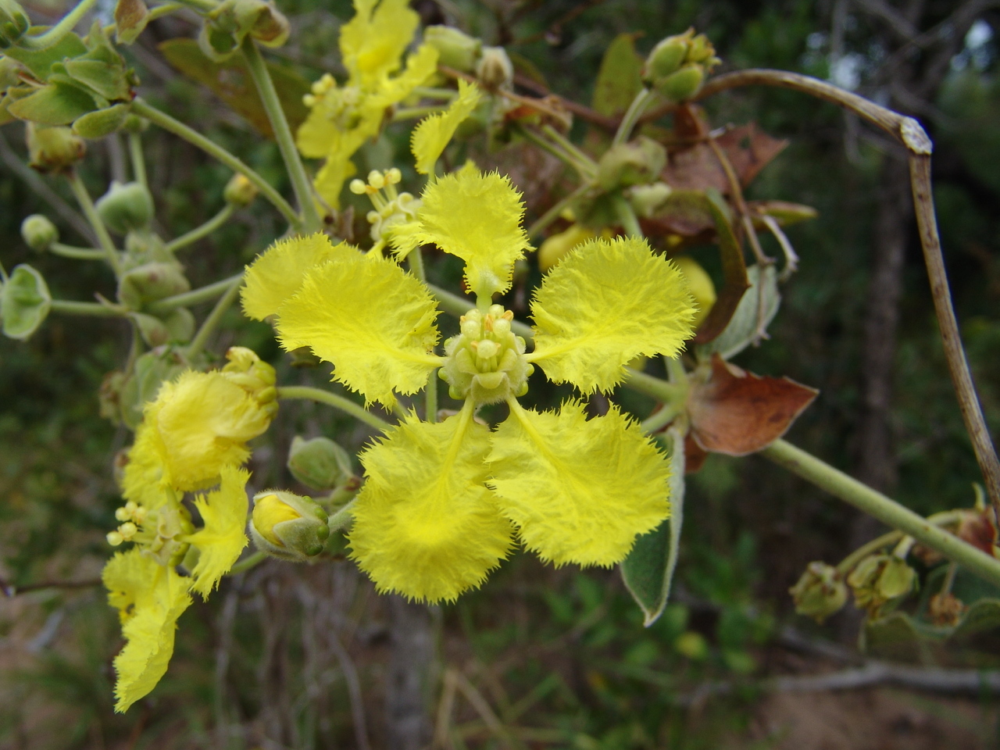
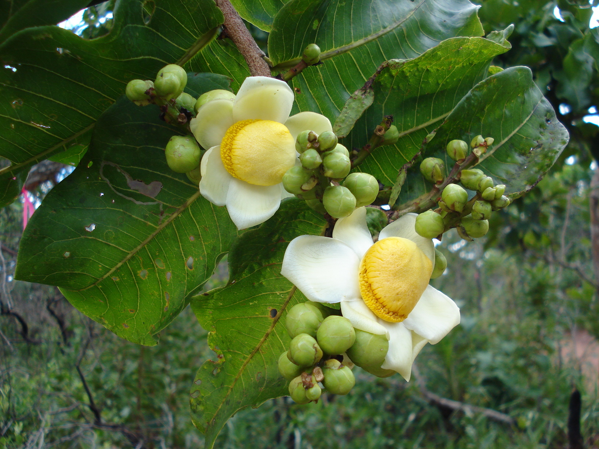
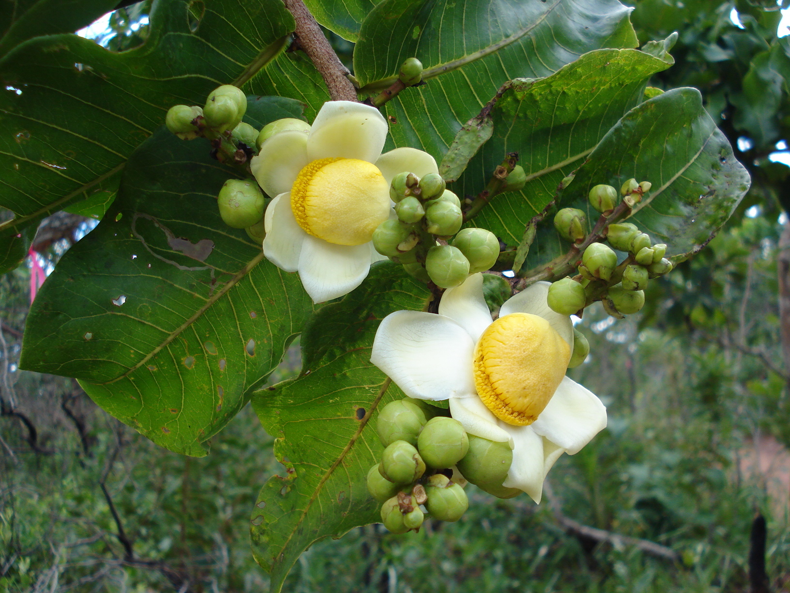

Cipó Ouro
Família: Malpighiaceae
Nome Científico: Peixotoa cordistipula A.Juss.
Nome popular: "cipó ouro"
Usos: grande potencial ornamental, melífera (atrai abelhas).


Usos: grande potencial ornamental, melífera (atrai abelhas).
Usos: Seu nome popular, jatobá, deriva do tupi e significa fruto de casca dura e jataíba pode ser traduzido como árvore da abelha jataí, por causa de suas flores melíferas. Pode ser utilizado no paisagismo, devido à sua imponência. Tem amplo aproveitamento no setor florestal e na medicina popular, aproveitando a casca para o tratamento de gripes, bronquite, infecções da bexiga, cistite e como vermífugo. Essa casca fornece uma resina usada como vernize e como incenso. Sua madeira pesada é utilizada em construções externas, móveis, portas, janelas, assoalhos, batentes, dormentes ferroviários e cruzetas, além dos indígenas a usarem para a confecção de embarcações.
A polpa do fruto é utilizada para fazer farinha além de ser apreciada muito pela avifauna, especialmente veados, cutias e macacos. Os roedores como a anta e a paca, os roem disseminando as sementes na mata, colaborando com a dispersão.

Usos: Árvore indicada para arborização urbana devido ao seu pequeno porte e bela floração com suas flores peculiares que lembram um ovo frito. Suas sementes são consumidas por araras e papagaios e podem ser consumidas por humanos pois se assemelham ao sabor da castanha do Pará.
 

Usos: A folha-moeda é um arbusto grande importância econômica pois suas folhas são o componente usado no artesanato. Tem grande potencial no paisagismo devido a sua bela florada. A boa resistência ao fogo ajuda a sua sobrevivência em locais invadidos por capins exóticos.

Usos: Sua copa globosa com folhagem delicada e a florada singular a indica para calçadas sob a rede elétrica. Resultados preliminares de estudos científicos indicam que Qualea multiflora é uma planta com grande potencial antimicrobiano frente à bactéria Staphylococcus aureus.